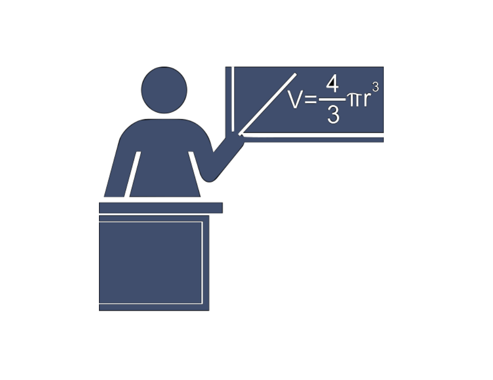
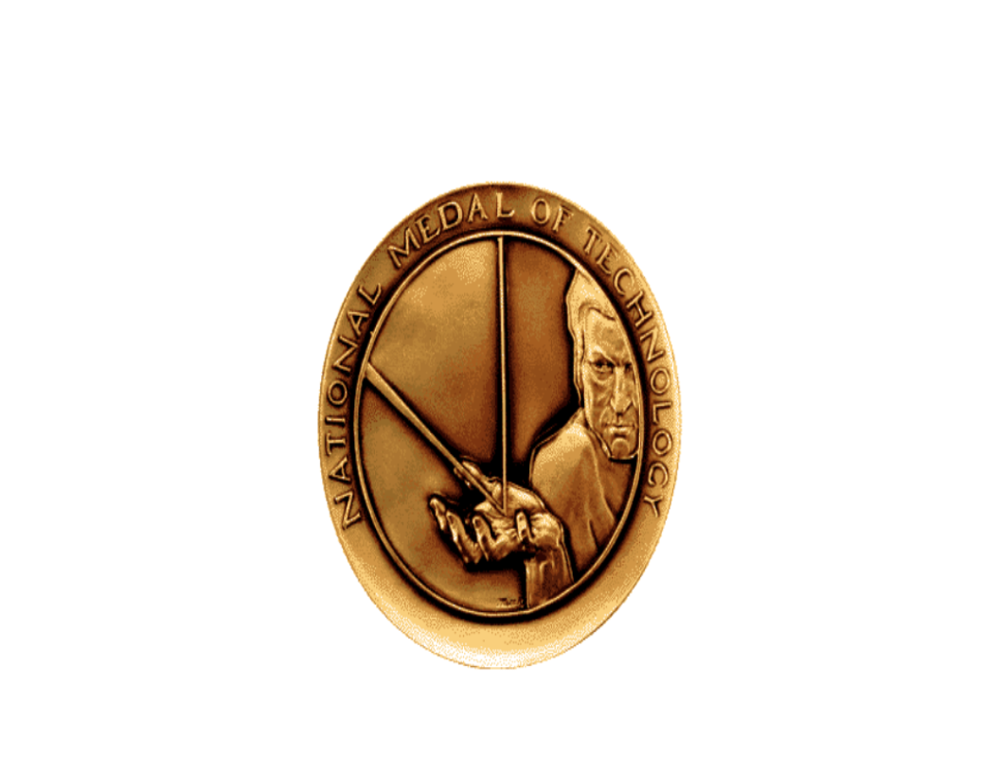

Dennis Ritchie

1941 - 2011
"The only way to learn a new programming language is by writing programs in it."
"My work was fairly theoretical. It was in recursive function theory. And in particular, hierarchies of functions in terms of computational complexity. I got involved in real computers and programming mainly by being - well, I was interested even as I came to graduate school."
1941
Dennis Ritchie was born in Bronxville, New York. His father was Alistair E. Ritchie, a longtime Bell Labs scientist and co-author of The Design of Switching Circuitson switching circuit theory.As a child, Dennis moved with his family to Summit, New Jersey, where he graduated from Summit High School.
1968
He graduated from Harvard University with degrees in physics and applied mathematics.My undergraduate experience convinced me that I was not smart enough to be a physicist, and that computers were quite neat. My graduate school experience convinced me that I was not smart enough to be an expert in the theory of algorithms and also that I liked procedural languages better than functional ones.
1967

Ritchie began working at the Bell Labs Computing Sciences Research Center, and in 1968, he defended his PhD thesis on "Program Structure and Computational Complexity" at Harvard under the supervision of Patrick C. Fischer. However, Ritchie never officially received his PhD degree as he did not submit a bound copy of his dissertation to the Harvard library, a requirement for the degree.In 2020, the Computer History museum worked with Ritchie's family and Fischer's family and found a copy of the lost dissertation.
1960-1970s
During the 1960s, Ritchie and Ken Thompson worked on the Multics operating system at Bell Labs. Thompson then found an old PDP-7 machine and developed his own application programs and operating system from scratch, aided by Ritchie and others. In 1970, Brian Kernighan suggested the name "Unix", a pun on the name "Multics".To supplement assembly language with a system-level programming language, Thompson created B. Later, B was replaced by C, created by Ritchie, who continued to contribute to the development of Unix and C for many years.During the 1970s, Ritchie collaborated with James Reeds and Robert Morris on a ciphertext-only attack on the M-209 US cipher machine that could solve messages of at least 2000–2500 letters.Ritchie relates that, after discussions with the NSA, the authors decided not to publish it, as they were told that the principle was applicable to machines still in use by foreign governments.Ritchie was also involved with the development of the Plan 9 and Inferno operating systems, and the programming language Limbo.
1983-2011

Turing Award (1983),National Medal of Technology (1998),IEEE Richard W. Hamming Medal (1990),Computer Pioneer Award (1994),Computer History Museum Fellow (1997),Harold Pender Award (2003),Japan Prize (2011)